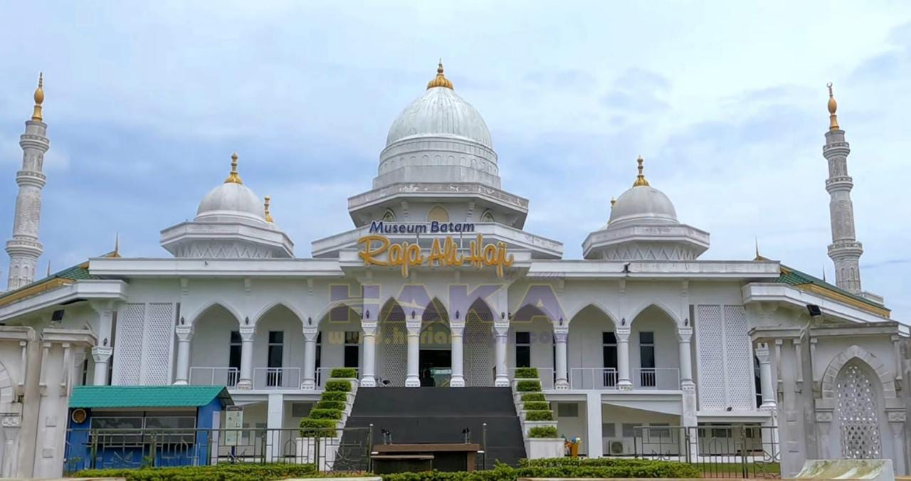

Tempat Ibadah Kota Batam
Anda akan diberitahu tentang tempat ibadah di batam mulai dari islam, kristen, hindu, dan budha juga mengetahui info tentang bangunan tempat ibadah tersebut.
Tempat Ziarah Kota Batam
Anda akan melihat tempat ziarah yang biasa dikunjungi untuk wisata religi khususnya di kota Batam yang sudah cukup terkenal dan kerap di kunjungi jelang Hari Jadi Kota Batam.

Tempat Sejarah Kota Batam
Kami memberikan anda referensi terkait wisata religi di kota Batam salah satunya adalah museum raja ali haji yang berada di pusat kota batam yang dapat anda lihat tempat sejarah di Kota Batam.